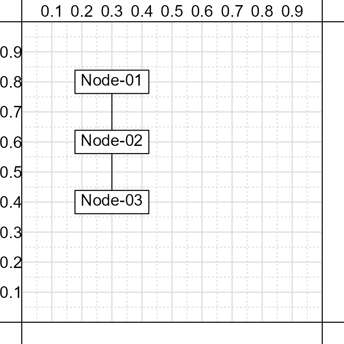
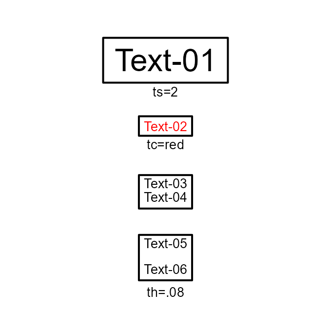

Tutorial
Tutorial.Rmd
library(pathdiagrams)Table of contents
- Introduction
- Creating a diagram and adding nodes
- Determining spacing between nodes
- Node aesthetics (shape, fill color, etc.)
- Text aesthetics (size, color, etc.)
- Bold and italic text
- Arrows and lines connecting nodes
1) Introduction
The pathdiagrams package provides an extension to base R’s plotting tools for creating various types of path diagrams. The package can be used to help create diagrams displaying various structural equation model (SEM) analyses, such as factor or path analyses. The package can also be used to create CONSORT-type diagrams (subject enrollment and retention in a study).
2) Creating a diagram and adding nodes
Creation of a path diagram proceeds in two steps:
- Create a blank figure using ‘create_base_figure’;
- The x and y-axis boundaries for the figure are between 0 and 1.
- By default, guidelines are provided to help with positioning.
- Add nodes and lines/arrows via functions like ‘add_nodes’.
- Nodes can be created via the ‘add_nodes’ function per an input string of the format: ‘Text content|x=value|y=value’.
- Nodes are created centered at the specified x and y-axis values.
- Multiple nodes can be created by providing a vector of text strings.
# Creates a base figure with lower and upper limits from
# 0 to 1. By default, figure is 6 x 6 inches (? x ? cm),
# and has guidelines to aid with development and
# positioning for the diagram.
create_base_figure( new = FALSE )
# Add a rectangle with the text 'Node-01' centered at
# the (x,y) coordinates (0.3,0.8). Input is formatted
# as: 'Text|x=coordinate|y=coordinate' - each element
# is separated by the '|' symbol.
add_nodes( 'Node-01|x=.3|y=.8' )
# Add multiple nodes with text at different y-axis
# positions.
add_nodes( c( 'Node-02|x=.3|y=.6', 'Node-03|x=.3|y=.4' ) )
3) Determining spacing between nodes
Once nodes have been created, it can be helpful to know the dimensions of a node and the distance between two nodes. Furthermore, we often will want to adjust node locations so that two nodes are a fixed distance apart from each other. The pathdiagrams package provides several built-in functions to allow users to quickly compute these values. For example, consider the creation of two nodes, ‘N01’ and ‘N02’:
create_base_figure( new = FALSE )
# Initial creation of nodes
inputs <- c(
N01 = 'Node-01|x=.3|y=.861',
N02 = 'Node-02|x=.3|y=.339'
)
nodes <- add_nodes( inputs, output = TRUE )
# Determine size of node 'N01'
size( nodes$N01 )
#> width height
#> 0.3380210 0.1074443
# Determine distance between nodes
# along the y-axis
sep( nodes, c( 'N01', 'N02' ),
dimension = 'y-axis' )
#> [1] 0.4145557
# Determine new y-axis position
# for 'N02' so that it is the
# desired distance from 'N01'
sep( nodes, c( 'N01', 'N02' ),
dimension = 'y-axis', desired = .1 )
#> new_y
#> 0.4145557 0.6535557Once we have determined the new y-axis coordinate, we can update the code for the node creation such that the nodes ‘N01’ and ‘N02’ are the appropriate distance apart from each other:
create_base_figure( new = FALSE )
inputs <- c(
N01 = 'Node-01|x=.3|y=.861',
N02 = 'Node-02|x=.3|y=.639'
)
nodes <- add_nodes( inputs, output = TRUE )4) Node aesthetics (shape, fill color, etc.)
Multiple options controlling the aesthetics of a node can be included. Options, separated by the pipe symbol ‘|’, are added to the end of the input string with the text content and x and y-axis position. Options for nodes are in the form ‘n_=’ with the underscore replaced by an appropriate letter. For example, to change a node’s fill color to red, the full input string would be:
‘Text content|x=value|y=value|nc=red’
The following figure showcases the range of options and how the options should be specified:
create_base_figure( guidelines = FALSE, new = FALSE )
inputs <- c(
# Change shape to ellipse
N01 = 'Node-01|x=.5|y=.9|ns=circle',
# Change fill color to grey
N02 = 'Node-02|x=.5|y=.7|nc=grey80',
# Change border color to red
N03 = 'Node-03|x=.5|y=.5|nb=red',
# Change padding around text
N03a = 'Node-03a|x=.175|y=.5|np=1.5',
# Change padding around text
N03b = 'Node-03b|x=.825|y=.5|nx=.23|ny=.15',
# Change border width
N04 = 'Node-04|x=.5|y=.3|nw=4',
# Change border type
N05 = 'Node-05|x=.5|y=.1|nt=3'
)
nodes <- add_nodes( inputs, output = TRUE, text.size = .85 )
# How to specify options
text( c( .5, .5, .5, .175, .825, .5, .5 ),
c( .825, .625, 0.425, .375, .38, .225, .025 ),
c( 'ns=circle', 'nc=grey80', 'nb=red',
'np=1.5', 'nx=.23|ny=.15', 'nw=4',
'nt=3' ),
cex = .85, xpd = NA
)
5) Text aesthetics (size, color, etc.)
Multiple options are also available for controlling the aesthetics of the text content of a node. Again, options separated by the pipe symbol ‘|; are added to the end of the input string. Options for text aesthetics are in the form ’t_=’ with the underscore replaced by an appropriate letter. For example, to change the color of the text in a node to red, the full input string would be:
‘Text content|x=value|y=value|tc=red’
The following figure showcases the range of options and how the options should be specified:
create_base_figure( guidelines = FALSE, new = FALSE )
inputs <- c(
# Change text size
N01 = 'Text-01|x=.5|y=.9|ts=2',
# Change text color
N02 = 'Text-02|x=.5|y=.65|tc=red',
# Multiple lines of text
N03 = 'Text-03\nText-04|x=.5|y=.4',
# Change spacing between lines
N04 = 'Text-05\nText-06|x=.5|y=.15|th=.08'
)
nodes <- add_nodes( inputs, output = TRUE, text.size = .85 )
# How to specify options
text( .5, c( .78, .58, .02 ),
c( 'ts=2', 'tc=red', 'th=.08' ),
cex = .85, xpd = NA
)6) Bold and italic text
Forthcoming.
create_base_figure( guidelines = FALSE, new = FALSE )
inputs <- c(
# Bold text
N01 = '**Bold** text|x=.5|y=.9',
N02 = '**Bold** text\n More **Bold** text|x=.5|y=.65',
# Italic text
N01 = '*Italic* text|x=.5|y=.4',
N02 = '*Italic* text\n More *italic* text|x=.5|y=.15'
)
nodes <- add_nodes( inputs, output = TRUE, text.size = .85 )
7) Arrows and lines connecting nodes
The pathdiagrams package also allows a user to add either arrows or lines to connect nodes. Details of what lines to draw and the aesthetics of these lines are specified via a call to the ‘paths’ argument for the ‘add_nodes’ function.
When nodes are labeled, a line from one node to another can be added via a input string of the following form:
‘Node label|start position|Node label|end position’
There are 8 positions that a user can specify: ‘top’, ‘topright’, ‘right’, ‘bottomright’, ‘bottom’, ‘bottomleft’, ‘left’, and ‘topleft’.
create_base_figure( guidelines = FALSE, new = FALSE )
# Define nodes
inputs <- c(
N01 = 'Node-01|x=.1|y=.5',
N02 = 'Node-02|x=.9|y=.5'
)
# Arrow from node 'N01' to 'N02'
paths <- c(
'N01|right|N02|left'
)
nodes <- add_nodes( inputs, paths, output = TRUE )In cases where a user wants to add a line that is not defined relative to a pair of nodes, one can provide the x and y-axis coordinates instead:
create_base_figure( guidelines = FALSE, new = FALSE )
# Define nodes
inputs <- c(
N01 = 'Node-01|x=.5|y=.75',
N02 = 'Node-02|x=.5|y=.25',
N03 = 'Node-03|x=.9|y=.5'
)
paths <- c(
# Arrow between Node-01 and Node-02
'N01|bottom|N02|top',
# Arrow defined at fixed coordinates
'x,y|.5,.5|x,y|.7,.5'
)
nodes <- add_nodes( inputs, paths, output = TRUE )
As before, additional options, separated by the pipe symbol ‘|’, can be added to the end of the input string that control the aesthetics of the lines:
create_base_figure( guidelines = FALSE, new = FALSE )
# Define nodes
inputs <- c(
N01 = 'Node-01|x=.25|y=.25',
N02 = 'Node-02|x=.25|y=.75',
N03 = 'Node-03|x=.75|y=.75',
N04 = 'Node-04|x=.75|y=.25'
)
paths <- c(
# Arrow between Node-01 and Node-04
'N01|right|N04|left',
# Line between Node-01 and Node-02
'N01|top|N02|bottom|lp=0|ll=0',
# Double-headed arrow
'N02|right|N03|left|cd=<->',
# Set line width and color
'N03|bottom|N04|top|lw=4|lc=red'
)
nodes <- add_nodes( inputs, paths, output = TRUE )